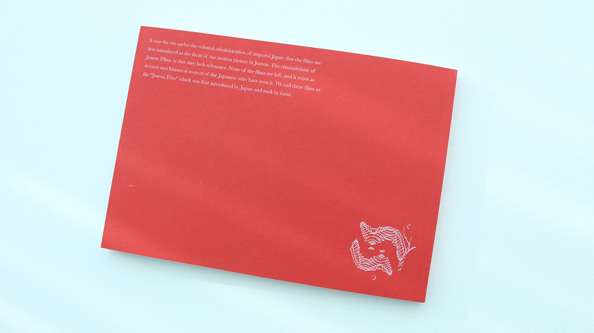
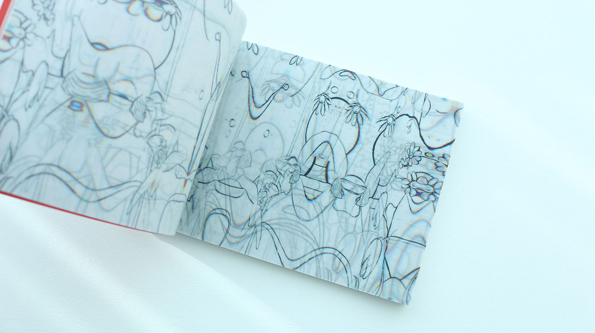
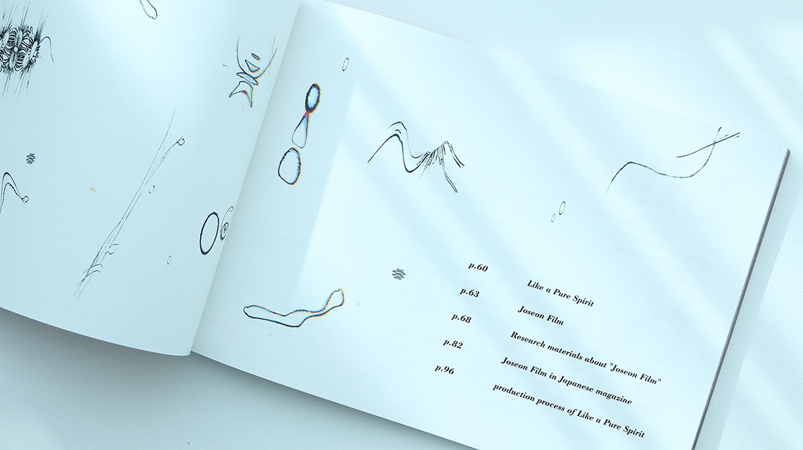
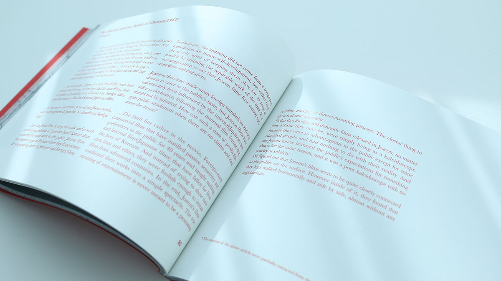
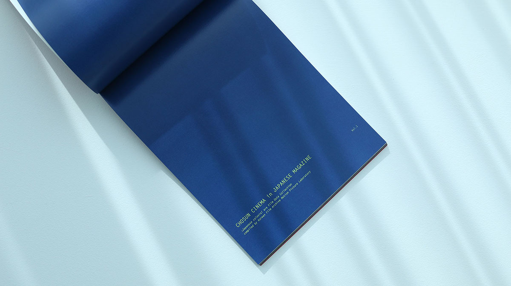

LIKE A
PURE
SPIRIT
FORMAT : VIDEO / BOOK
DURATION : 02'55" / 120p
An experimental video
with a research and production book
individual work
graphic design : Ye Jin, CHOI
book design : Ye Jin, CHOI
WORK
PROCESS OF SCANNING
More than 600 papers were scanned to make scenes.After making the images and let the move, I rendered the whole scene as image files with 12 frames.
Then, all these scenes were scanned with rubbing to the scanner. These process made up unpredictable new images.

BOOK : research and production book
This book consists of A-B-A' formatA : flipping book
B : research and production book
A' : flipping book








